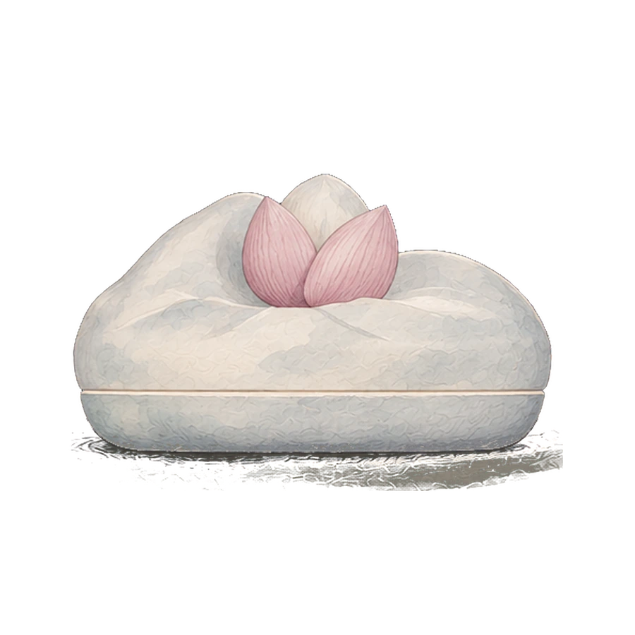
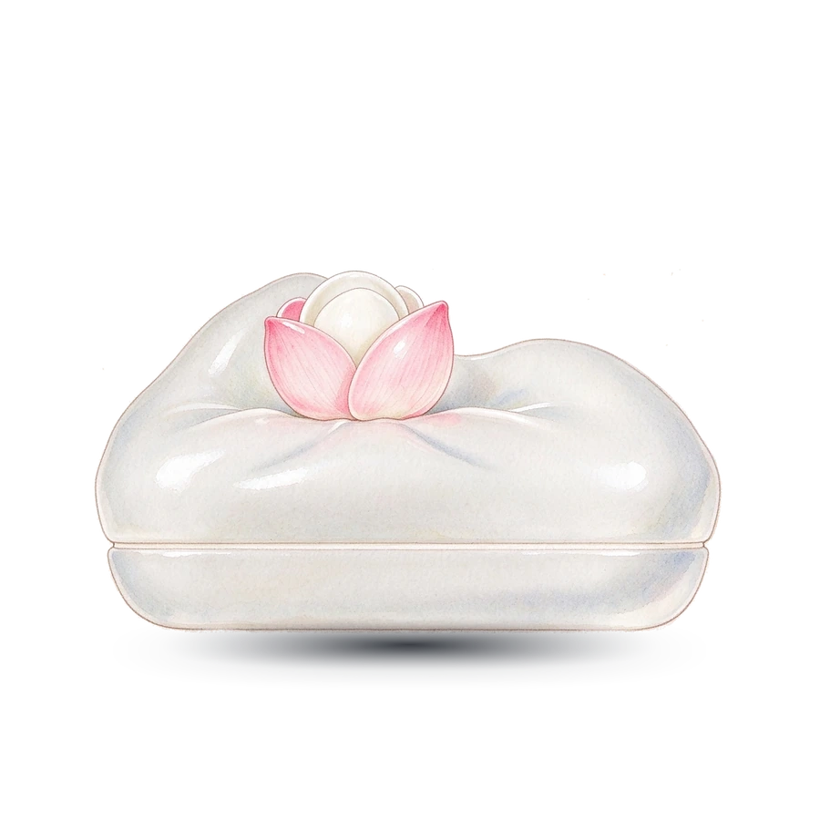
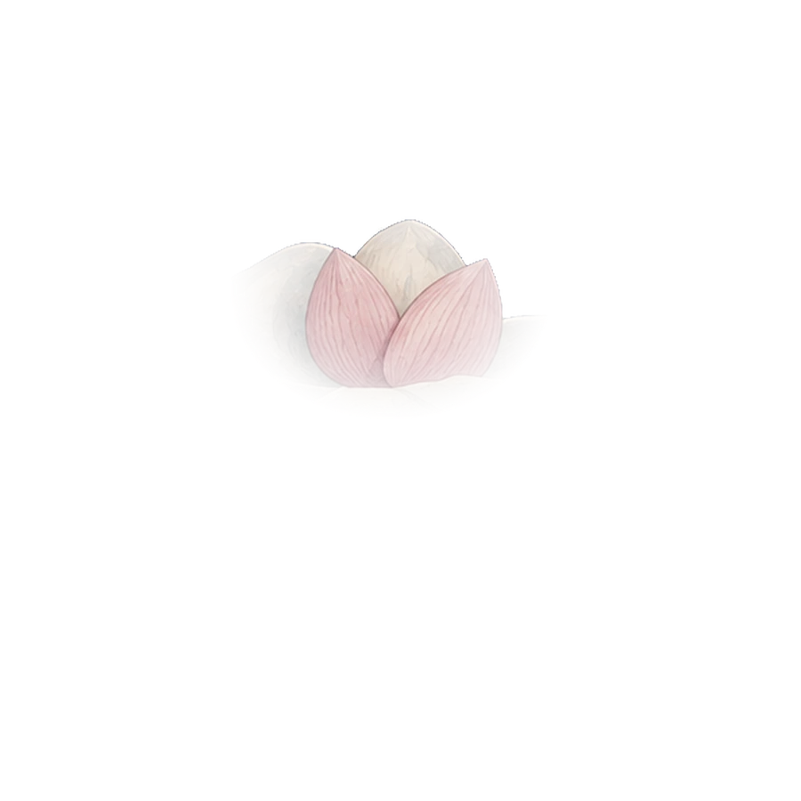
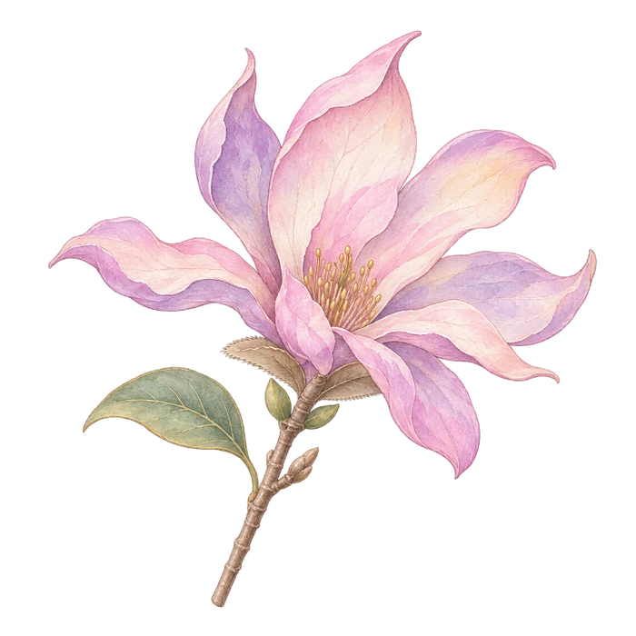

此刻 · 香冷
长按点香
平和气血调匀中等置信
香方配比

沉香 40%
竹青 40%
龙脑 20%
今日 · 已陪你 42 分钟 · 点香 0 次
本月
有记录



此刻 · 香冷
平和气血调匀中等置信

今日 · 已陪你 42 分钟 · 点香 0 次
有记录
非 遗 药 香 · 情 绪 关 怀
一炷烟起 万虑皆息
轻 触 入 室
健康管理工具 · 不构成医疗建议 · 数据仅在本机处理